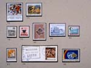

Balkan in kaart
Vijf eeuwen strijd om identiteit
Tentoonstelling van 4 september tot 16 oktober 2003 in de Universiteitsbibliotheek
Samenstelling: Harrie Teunissen en John Steegh
Tentoonstelling
kaarten 1 - 6, 7
- 9, 10 - 19, 20
- 29, 30 - 39, 40 -
47
Tenzij anders vermeld zijn de hier beschreven kaarten en gerelateerde stukken afkomstig uit de ‘Collectie Steegh & Teunissen’, te Leiden. Aan het eind van iedere uitgebreide objectbeschrijving is de naam van de auteur vermeld.
| 40. Kleine geschiedenis
van 'Joegoslavië' in post- en kaartzegels (collectie A. Steegh)
Blad 1 |
|
| met echt eigen
zegels. In het huidige Macedonië worden wel zegels uitgegeven, maar
niet door enige staatsorganisatie. De hier afgebeelde zegels zijn
dan ook emissies van comités met pretenties, maar zonder formeel
gezag. De eerste keer dat het gebied duidelijk op een zegel staat is
op een kaartzegel van Bulgarije ter gelegenheid van de annexatie
tijdens de Eerste Wereldoorlog. Het noorden en het centrum van het latere Joegoslavië zijn in handen van de Dubbelmonarchie en na de aanslag in Sarajevo (juli 1914) en de daarop volgende oorlog wordt ook de rest bezet door de Oostenrijk-Hongarije (met uitzondering van het net genoemde Macedonië). De regeringen van Montenegro en Servië gaan in ballingschap en geven van daaruit zegels uit. |
|
| Blad 2 Het eerste Joegoslavië, gesneuveld door de As Als het Koninkrijk der Serven, Kroaten en Slovenen tot stand komt zijn er weliswaar ‘nationale’ postzegels, maar taal- en vooral alfabetgrenzen blijven sporen trekken. Het enthousiasme voor de nieuwe eenheidsstaat kan indirect worden afgeleid uit de |
|
| ruimte die de
tekst inneemt op zegels. Koning-dictator Alexander dwingt de zaak
nog bij elkaar, maar meteen na de Duitse invasie in 1941 vormen
Kroaten een eigen staat op het territoir van de oude ‘ban’
(provincie), afgebeeld op het kleine blauwe kaartzegeltje van 1938.
Deze Ustasja-staat annexeert meteen Bosnië-Herzegovina: de grote
blauwe kaartzegel. Nostalgische Kroaten laten deze claim ook na de
oorlog niet los (het kaartzegeltje van de regering in ballingschap).
Slovenië en Montenegro worden Italiaans en Macedonië weer Bulgaars
(het rode kaartzegeltje met het portret van tsaar Boris). |
|
| Blad 3 De Duitse bezetting en de partizanen. Naast de Kroatische vazalstaat van de Ustasja's komt in 1943 (Italiaanse capitulatie) ook de rest van Joegoslavië onder Duitse bezetting. Buiten het al door de Nazi's bezette Servië wordt het land opnieuw |
|
| opgedeeld. Deze
opdeling van het land tekent op zijn beurt weer de eerste zegels van
de jonge Volksrepubliek. Om te voorkomen dat oude tegenstellingen
herleven kiest Tito voor een sterk federaal staatsmodel: de zegels
met typische communistische ‘korenaren blazoenen’ laten de zes
samenstellende deelrepublieken zien. |
|
| Blad 4 De Volksrepubliek en de desintegratie na 1991 Josip Broz Tito houdt het land tot zijn dood in 1980 met zijn charisma èn met straffe hand bijeen. Het duurt nog ruim een decennium voordat ook het tweede Joegoslavië desintegreert. Slovenië verwerft vrijwel zonder strijd zijn onafhankelijkheid. Voor Kroatië wordt verbeten gevochten en duurt het langer: het Rode |
|
| Kruis
kaartzegeltje toont de definitieve grenzen. Maar meer naar het
zuiden vinden slachtpartijen plaats, in het bijzonder in Bosnië-Herzegovina.
Voor de opbouw van een nationaal historisch besef grijpt men terug
op een kaartje van Bosnische rijkjes tijdens de Middeleeuwen. De
grenzen worden na Dayton (de volgende kaartzegel) bewaakt door VN
vredestroepen. |
|
|  | Blad 5 Recente brandhaarden: het uiteenvallen van Servië? De 'balkanisering' van Joegoslavië treft in de late jaren ’90 ook Servië, dat zich op de postzegels nog altijd Zuid-Slavië (Joegoslavia) blijft noemen. Na het drama van de burgeroorlog en de verdrijving van albaneestaligen komt Kosovo onder bestuur van de VN, de begrenzing is te zien op een kaartzegel. |
| Macedonië
consolideert zich uiteindelijk ook. De vraag is waar dit proces van
desintegratie stopt: wanneer roept Montenegro zijn zelfstandigheid
uit?, zou de Sandjak zich nog willen afscheiden?, hoe gevaarlijk
zijn pretenties van afscheidingsbewegingen in de Banaat? Van al deze
gebieden circuleren er al onofficiële opdrukken in het
filatelistische circuit. (meer)
|
|
| 41. Military Survey (UK), Sarajevo (525), Inter-Entity and Agreed Cease-Fire Zones, Topografische kaart 1 : 100.000 van het Vojnogeografski institut, z.p. 1985. Overdruk gebaseerd op gegevens van Defense Mapping Agency (USA) op 25 november 1995. 47,5 x 58 cm. (W.2h.9) | |
| 42. Geographic
Branch HQ SFOR juni 1999: Bosnia and Herzegovina, Series GSGS 5726 1
: 500.000. Met Inter Entity Boundary Line, gebaseerd op de gegevens
van de 1 : 600.000 kaart behorende bij het vredesverdrag van Dayton
(25-11-1995) en de geaccordeerde veranderingen van 6 juli 1996 en 5
mei 1998. 70 x 65 cm. (W.2h.10) Op deze twee kaarten is de grens te zien tussen de twee 'entiteiten' die uit het verdrag van Dayton voortkomen: een Servische en een moslim-Kroatische. Ook is de gedemilitariseerde zone langs die grenslijn aangegeven. Uit de kaart van Sarajevo en omgeving blijkt dat bij het akkoord een eind wordt gemaakt aan |
|
| de omsingeling
van de stad. De 'cease-fire-line' ligt immers tot in de westelijke
buitenwijken, terwijl de 'inter-entity-boundary' meteen naar het
noorden afbuigt. In de rest van Bosnië is de grens bijna identiek
aan de laatste frontlinie. De opdeling van Bosnië-Herzegovina wordt
daarmee feitelijk door de internationale gemeenschap geaccepteerd.
(meer)
|
|
| 43. Dimitrija Č
upovski: Karta Makedonija, po programa na Makedonskite narodnitsi. (Kaart van Macedonië, volgens het programma van de Macedonische populisten). Skopje (!) 1998, (Facsimile van de kaart van Groot-Macedonië uit Petersburg 1913). Schaal 1 : ca 1.400.000. 33 x 44 cm. (W.2i.7) |
|
 |
44. Makedonija. (Macedonië).
Thessaloniki 1994. (Verkleinde facsimile van Makedonija uitgegeven
door 'Nova Makedonij'. Skopje 1992). 17 x 23 cm. |
| 45. Republika Makedonija.
Republiek Macedonië. (Politiek 'correcte' kaart van de Republiek
Macedonië). Belgrado 1998. Schaal 1 : 600.000. 35 x 43,5 cm.
(W.2i.8)
De oorspronkelijke 'Kaart van Macedonië, volgens het programma van de Macedonische populisten' (nr. 43) hoorde bij een memorandum bestemd voor de |
|
| conferentie van
de grootmachten die na de Ottomaanse nederlaag in de Eerste
Balkanoorlog (1912-'13) wordt gehouden om de nieuwe geopolitieke
kaart van de Balkan te ontwerpen. Het strijdpunt is de verdeling van
de macedonische en albanese gebieden. De kaart uit 1913 poneert dat
Macedonië een etnisch en geografisch geheel is. Deze opvatting is
eind 19e eeuw ontstaan en wordt gedragen door geheime comités. De
machtsstrijd tussen facties die autonomie voor Macedonië zien als
een opstap naar zelfstandigheid en facties die via die autonomie
aansluiting zoeken bij Bulgarije leidt tot onderlinge liquidaties en
destabilisatie. Dit maakt het genoemde memorandum kansloos. De
nieuwe kaart van Groot-Macedonië (nr. 44) wordt ook verbreidt door
de geografie- en geschiedenisboeken die in de republiek Macedonië
vanaf het schooljaar 1992-'93 in gebruik zijn. De kaart, uitgegeven
door het semi-officiële 'Nova Makedonija', is voor Griekenland de
aanleiding om in 1992 de grens met FYROM (Former Yugoslav Republic
Of Macedonia) te sluiten. Haar grenzen komen verdacht veel overeen
met de kaart uit 1913. Huidige staatsgrenzen lijken provinciegrenzen
binnen een veel groter etnisch-macedonië. Gelukkig is de Griekse
blokkade in 1995 opgeheven en zijn rond de Kosovo-crisis en een
akkoord met de NAVO de schoolboeken min of meer aangepast. In ieder
geval verschijnt er in 1998 ook een 'politiek correcte' kaart van de
Republiek Macedonië (nr. 45). (meer)
|
|
| 46. Trouw 3 april 1999.
Gaten in de kaart. Brandhaarden in Kosovo voor en na de
bombardementen en vluchtelingen over de grenzen. 41 x 35 cm. |
|
| 47. NRC 23 april 1999. 1 maand conflict om Kosovo, 7 kaartjes over vluchtelingen uit en UÇK in Kosovo en over de Operatie Allied Force, 29 x 40 cm. Op de Kosovo-kaart uit Trouw zijn de belangrijkste schermutselingen en gruwelijkheden in 1998-'99 met |
|
| hun bronnen
weergegeven. De NRC probeert de complexe stand van zaken na een
maand operatie Allied Force uiteen te zetten en overzichtelijk weer
te geven. Kaarten maken in tijden van oorlog is een hachelijke
bezigheid. Wat vandaag waar lijkt, kan morgen propagandistisch
gemanipuleerd blijken te zijn. Dat ze dat risico lopen weten
journalisten maar al te goed. Deze kaarten zijn, zoals ze zelf
terecht stellen, kaarten van 'niet beter weten'. (meer) |
|
| vorige pagina | |